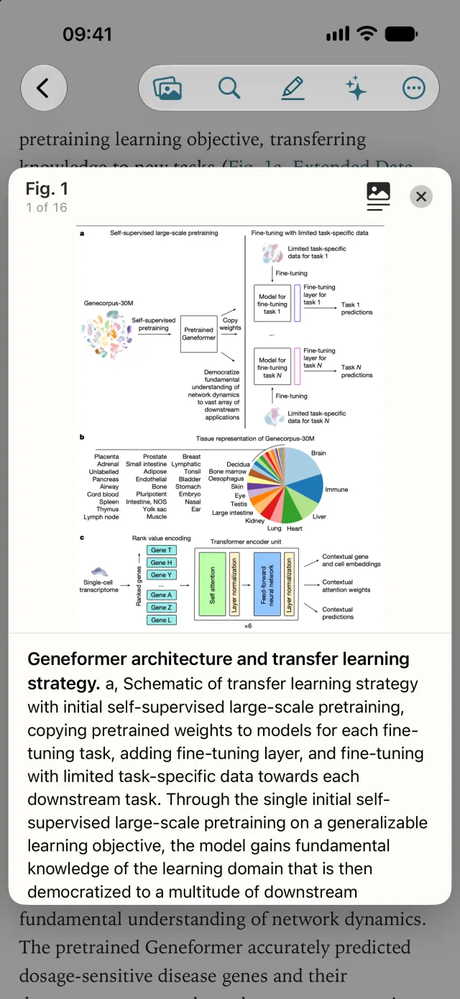
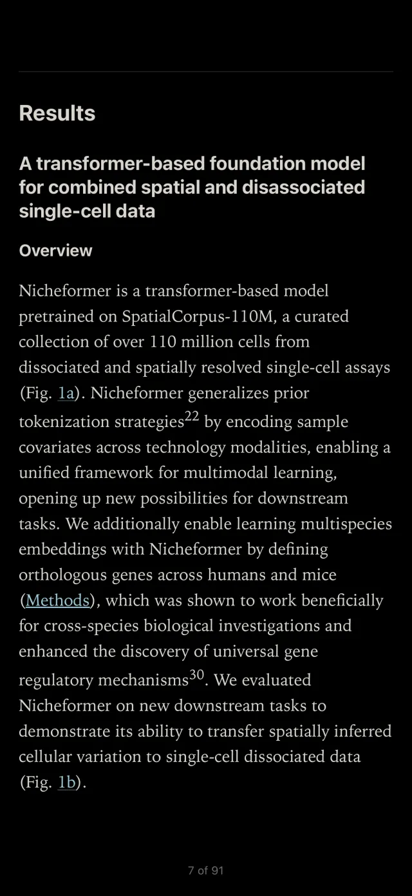

Read
A reading view made from every paper
Lunta builds each paper's reading view from its best source: the open XML version, arXiv, the journal's web page, or the PDF itself. Text that fits your screen, real equations, and figures you can open full size with their captions.
Scroll or turn pages in Light, Paper, Quiet or Black. The original PDF is always one tap away.

